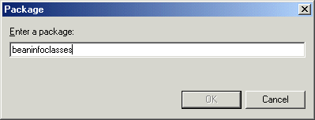

You can keep your BeanInfo classes in a separate JAR file in the
same project as the Java beans that they define, in a separate project, or
on the file system.
To use the BeanInfo classes and browse their source code, they
can be imported into a project as a ZIP or JAR file. Then the contents of
the file can be expanded to their individual entries. To save space, the BeanInfo
classes can be left in the JAR file, and the JAR can be imported as is.
However,
in order for the BeanInfo classes in the JAR file to be used during introspection
of your visual classes, you must include the JAR file in the BeanInfo Path
for the project and you must name the packages in the JAR file.
To add
JAR files containing BeanInfo classes to your project's BeanInfo path:
- Right-click your project with your visual classes, and select Properties from
the pop-up menu.
- On the BeanInfo Path property page, go to
the BeanInfo classes tab:
- Do one of the following steps:
- Click the Add JARs button if the BeanInfo JAR
files are included in a project on your workspace.
- Click the Add External JARs button if the BeanInfo
JAR files are on the file system, and not included in a project.
The JAR Selection window opens. If you are adding external JAR
files, you can browse to the location in the file system. If you are adding
JAR files from projects in your workspace, the window detects any JAR files
that are not already included in the BeanInfo path.
- Select the JAR files that include your BeanInfo classes, and click OK.
- You must now specify the packages in the JAR files that include
the BeanInfo classes. Complete the following steps for each JAR file that
you added:
- Select the JAR file, and click Modify Paths. The Modify Search Paths window opens.
- Click Choose Packages and enter the name
of the package that includes the BeanInfo classes, and click OK.
Repeat this step for multiple packages in the same JAR file.

The packages
are added to the list in the Modify Search Paths window.
- Click OK when you are finished listing
the packages in the JAR file that include the BeanInfo classes.
- Click OK to close the project properties
window
For example, the project MyProject contains the Java bean runtimeclasses.MyBean.
The JAR file designtime.jar contains its BeanInfo class in the package beaninfoclasses.
You
can either import the designtime.jar file into MyProject, or another
project, or you can leave it on your file system. Then you add designtime.jar to
the BeanInfo Path of MyProject, and name the beaninfoclasses package
as the location of the BeanInfo classes.
Remember: Because designtime.jar is
only used during design, not during build, it does not need to be added to
the Java Build path.
Tip: If you expand the JAR file in
your project when you import it, you simply need to add the beaninfoclasses package
to the BeanInfo Path on the Packages tab.